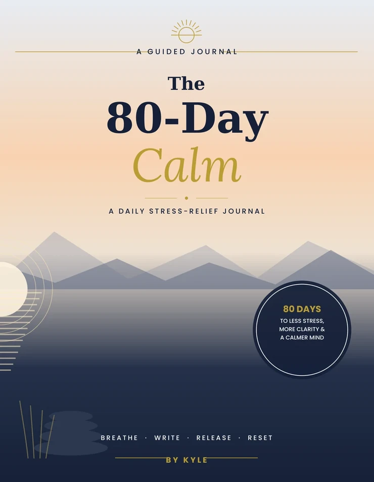
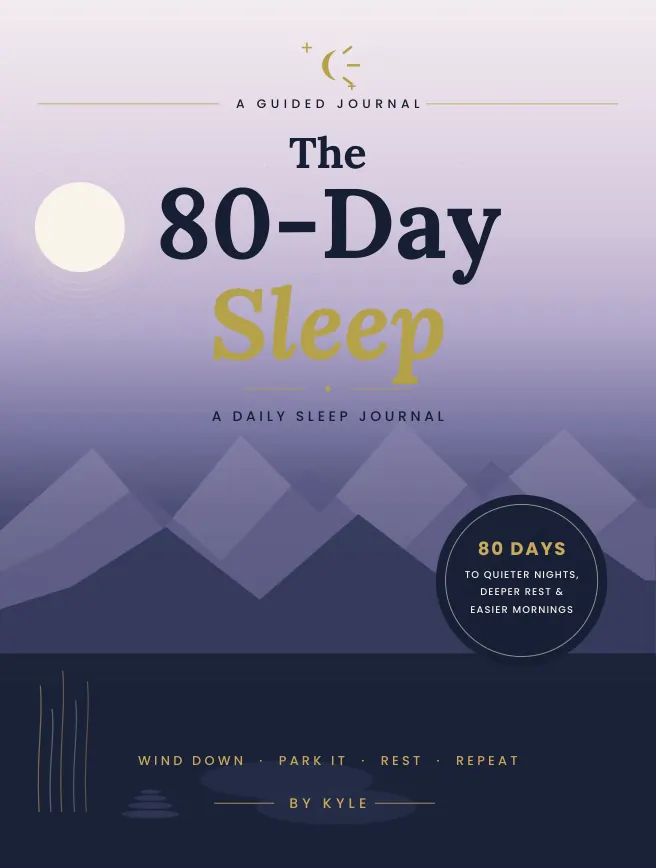
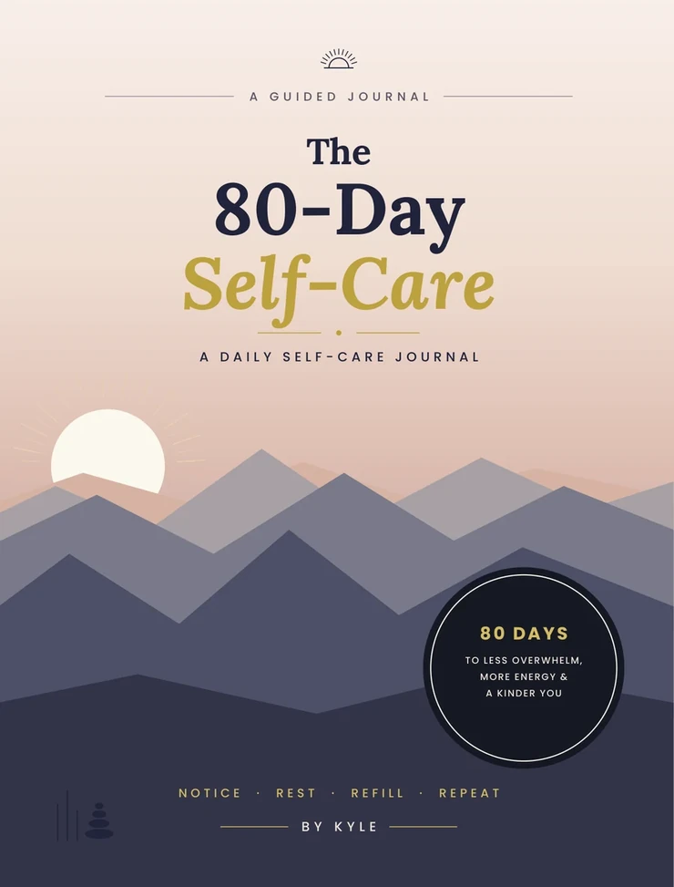
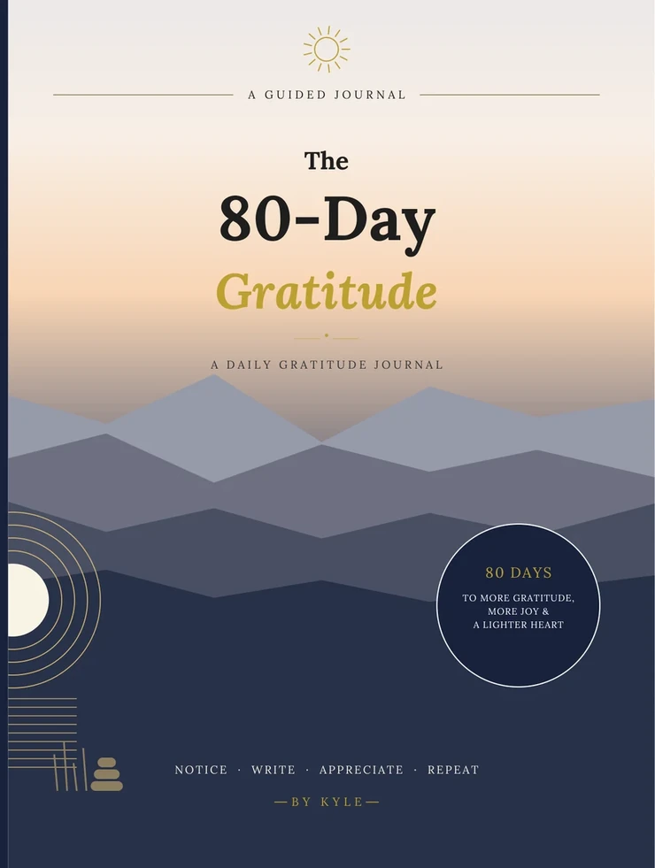

Planners & Journals
The 80-Day Calm
A Daily Stress-Relief Journal
A guided daily journal with prompts for calmer moments.
Amazon handles your order. Prices and availability may change there.
- Format
- Paperback
- Author
- Kyle Dyer
- Collection
- Planners & Journals
- ASIN
- B0H9G85NTR
Actual book pages
Look inside
Reduced-size samples from the finished interior. Tap a page for a closer look.
Keep exploring
View category More from this shelf

Planners & Journals
The 80-Day Sleep
A daily journal for reflecting on bedtime and sleep habits.
See inside
Planners & Journals
The 80-Day Self-Care
A daily journal for making space to reflect on self-care.
See inside
Planners & Journals
The 80-Day Gratitude
A guided journal for daily gratitude and reflection.
See inside